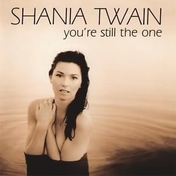
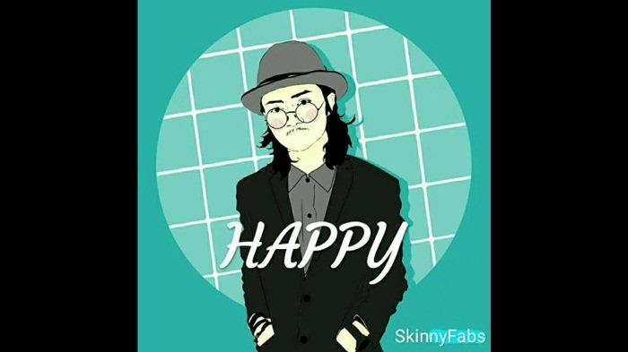
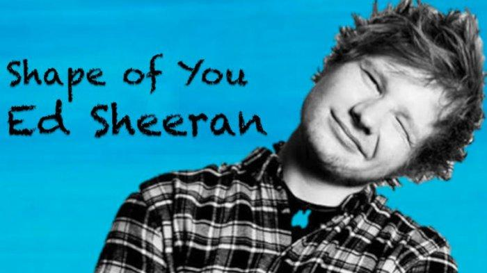

Hallo!
Berikut Ini 3 Lagu Kesukaan Saya :
Portofolio
About Me
Contact
1. You're Still The One - Shania Twain

Sisi romantis lagu "you're still the one" adalah makna dari liriknya yang menunjukan kesetiaan seseorang terhadap pasangannya sejak awal hubungan. Mengetahui bahwa setelah bertahun-tahun, dengan segala kekurangan dan kelemahan, si dia tetap menerima dan bersama dirimu.
2. Happy - Skinny Fabs

Lagu tersebut menceritakan tentang anggapan semua orang ketika melihat dirinya selalu bahagia atau terlihat seperti tidak memiliki beban dalam hidupnya, tetapi sebenarnya dalam lagu ini dijelaskan jika semua orang memiliki masalah dan beban masing-masing yang tidak bisa diceritakan kepada semua orang.
3. Shape Of You - Ed Sheeran

Lagu ini mengandung makna romantis dengan menggambarkan tentang pertemuan pertama hingga berujung jatuh cinta. Setiap detail serta kegiatan yang mereka lakukan bersama membuat rasa cinta itu semakin tumbuh hingga timbul rasa ingin memiliki sebagai sepasang kekasih.